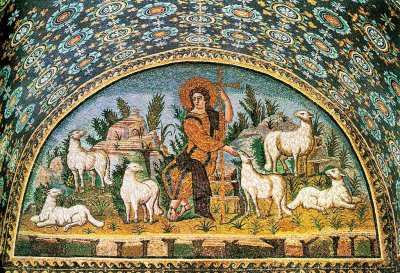

HODIE /  IV Domenica di Pasqua
IV Domenica di Pasqua
ANTIFONA / Dell’amore del Signore è piena la terra; dalla sua parola furono fatti i cieli. Alleluia. (Sal 32,5-6)
CONFITEOR / Confesso a Dio onnipotente e a voi, fratelli e sorelle, che ho molto peccato in pensieri, parole, opere e omissioni, per mia colpa, mia colpa, mia grandissima colpa. E supplico la beata sempre vergine Maria, gli angeli, i santi e voi, fratelli e sorelle, di pregare per me il Signore Dio nostro. Dio onnipotente abbia misericordia di noi, perdoni i nostri peccati e ci conduca alla vita eterna. Signore Pietà, Cristo pietà.
GLORIA / Gloria a Dio nell'alto dei cieli e pace in terra agli uomini di buona volontà. Noi ti lodiamo, ti benediciamo, ti adoriamo, ti glorifichiamo, ti rendiamo grazie per la tua gloria immensa, Signore Dio, Re del cielo, Dio Padre onnipotente. Signore, figlio unigenito, Gesù Cristo, Signore Dio, Agnello di Dio, Figlio del Padre, tu che togli i peccati dal mondo abbi pietà di noi; tu che togli i peccati dal mondo, accogli la nostra supplica; tu che siedi alla destra del Padre, abbi pietà di noi. Perché tu solo il Santo, tu solo il Signore, tu solo l'Altissimo, Gesù Cristo, con lo Spirito Santo: nella gloria di Dio Padre. Amen.
COLLETTA / Dio onnipotente e misericordioso, guidaci al possesso della gioia eterna, perché l’umile gregge dei tuoi fedeli giunga dove lo ha preceduto Cristo, suo pastore. Egli è Dio, e vive e regna con te. ♦ Dio, nostro Padre, che in Cristo buon pastore ti prendi cura delle nostre infermità, donaci di ascoltare oggi la sua voce, perché, riuniti in un solo gregge, gustiamo la gioia di essere tuoi figli. Per il nostro Signore Gesù Cristo, tuo Figlio, che è Dio, e vive e regna con te, nell'unità dello Spirito Santo, per tutti i secoli dei secoli.
LETTURA1 / In nessun altro c'è salvezza / Dagli Atti degli Apostoli (At 4,8-12) / In quei giorni, Pietro, colmato di Spirito Santo, disse loro: «Capi del popolo e anziani, visto che oggi veniamo interrogati sul beneficio recato a un uomo infermo, e cioè per mezzo di chi egli sia stato salvato, sia noto a tutti voi e a tutto il popolo d'Israele: nel nome di Gesù Cristo il Nazareno, che voi avete crocifisso e che Dio ha risuscitato dai morti, costui vi sta innanzi risanato. Questo Gesù è la pietra, che è stata scartata da voi, costruttori, e che è diventata la pietra d'angolo. In nessun altro c'è salvezza; non vi è infatti, sotto il cielo, altro nome dato agli uomini, nel quale è stabilito che noi siamo salvati». / Parola di Dio.
PSALMUS / (Sal 117) La pietra scartata dai costruttori è divenuta la pietra d'angolo / Rendete grazie al Signore perché è buono, perché il suo amore è per sempre. È meglio rifugiarsi nel Signore che confidare nell'uomo. È meglio rifugiarsi nel Signore che confidare nei potenti. R. / Ti rendo grazie, perché mi hai risposto, perché sei stato la mia salvezza. La pietra scartata dai costruttori è divenuta la pietra d'angolo. Questo è stato fatto dal Signore: una meraviglia ai nostri occhi. R. / Benedetto colui che viene nel nome del Signore. Vi benediciamo dalla casa del Signore. Sei tu il mio Dio e ti rendo grazie, sei il mio Dio e ti esalto. Rendete grazie al Signore, perché è buono, perché il suo amore è per sempre. R.
LETTURA2 / Vedremo Dio così come egli è / Dalla prima lettera di san Giovanni apostolo (1Gv 3,1-2) / Carissimi, vedete quale grande amore ci ha dato il Padre per essere chiamati figli di Dio, e lo siamo realmente! Per questo il mondo non ci conosce: perché non ha conosciuto lui. Carissimi, noi fin d'ora siamo figli di Dio, ma ciò che saremo non è stato ancora rivelato. Sappiamo però che quando egli si sarà manifestato, noi saremo simili a lui, perché lo vedremo così come egli è. / Parola di Dio.
ALLELUIA / Alleluia, alleluia / Io sono il buon pastore, dice il Signore, conosco le mie pecore e le mie pecore conoscono me. (Gv 10,14) / Alleluia.
VANGELO / Il buon pastore dà la propria vita per le pecore / Dal Vangelo secondo Giovanni (Gv 10,11-18) / In quel tempo, Gesù disse: «Io sono il buon pastore. Il buon pastore dà la propria vita per le pecore. Il mercenario - che non è pastore e al quale le pecore non appartengono - vede venire il lupo, abbandona le pecore e fugge, e il lupo le rapisce e le disperde; perché è un mercenario e non gli importa delle pecore. Io sono il buon pastore, conosco le mie pecore e le mie pecore conoscono me, così come il Padre conosce me e io conosco il Padre, e do la mia vita per le pecore. E ho altre pecore che non provengono da questo recinto: anche quelle io devo guidare. Ascolteranno la mia voce e diventeranno un solo gregge, un solo pastore. Per questo il Padre mi ama: perché io do la mia vita, per poi riprenderla di nuovo. Nessuno me la toglie: io la do da me stesso. Ho il potere di darla e il potere di riprenderla di nuovo. Questo è il comando che ho ricevuto dal Padre mio». / Parola del Signore.
CREDO / Credo in un solo Dio, Padre onnipotente, creatore del cielo e della terra, di tutte le cose visibili e invisibili. Credo in un solo Signore, Gesù Cristo, unigenito Figlio di Dio, nato dal Padre prima di tutti i secoli: Dio da Dio, Luce da Luce, Dio vero da Dio vero, generato, non creato, della stessa sostanza del Padre; per mezzo di lui tutte le cose sono state create. Per noi uomini e per la nostra salvezza discese dal cielo, e per opera dello Spirito Santo si è incarnato nel seno della Vergine Maria e si è fatto uomo. Fu crocifisso per noi sotto Ponzio Pilato, morì e fu sepolto. Il terzo giorno è risuscitato, secondo le Scritture, è salito al cielo, siede alla destra del Padre. E di nuovo verrà, nella gloria, per giudicare i vivi e i morti, e il suo regno non avrà fine. Credo nello Spirito Santo, che è Signore e dà la vita, e procede dal Padre e dal Figlio. Con il Padre e il Figlio è adorato e glorificato, e ha parlato per mezzo dei profeti. Credo la Chiesa, una santa cattolica e apostolica. Professo un solo battesimo per il perdono dei peccati. Aspetto la risurrezione dei morti e la vita del mondo che verrà. Amen.
OREMUS / Fratelli e sorelle, invochiamo il Signore, buon pastore che conduce il suo popolo ai pascoli della vita. Preghiamo insieme e diciamo: Buon Pastore, ascolta la nostra preghiera. / Buon Pastore, guarda la tua Chiesa che attraverso i sentieri tortuosi della storia anela al tuo Regno, e fa' che nessuno si perda di quanti hai consacrato a te nel battesimo, preghiamo. / Buon Pastore, guida il Papa e tutti i ministri della Chiesa, perché diano come te la vita per il bene del loro gregge e guidino la Chiesa ad essere un solo ovile attorno a te, unico Pastore, preghiamo. / Buon Pastore, ispira con il tuo Santo Spirito i catechisti, i missionari e tutti i laici che nella Chiesa donano il loro tempo all'annuncio del Vangelo, e rendili testimoni coraggiosi del Cristo morto e risorto, preghiamo. / Buon Pastore, che conosci tutte le tue pecore, guarda con amore questa tua comunità radunata e fa' che sempre di più cresca nel desiderio di seguire te, unica meta del pellegrinaggio terreno, preghiamo. / Ascolta, o Padre, queste nostre preghiere, ed esaudiscile per amore del tuo nome. Per Cristo nostro unico Signore.
OFFERTORIO / O Dio, che in questi santi misteri compi l’opera della nostra redenzione, fa’ che questa celebrazione pasquale sia per noi fonte di perenne letizia. Per Cristo nostro Signore.
PREFAZIO / La restaurazione dell’universo per mezzo del mistero pasquale / È veramente cosa buona e giusta, nostro dovere e fonte di salvezza, proclamare sempre la tua gloria, o Signore, e soprattutto esaltarti in questo tempo nel quale Cristo, nostra Pasqua, si è immolato. In lui, vincitore del peccato e della morte, l’universo risorge e si rinnova, e l’uomo ritorna alle sorgenti della vita. Per questo mistero, nella pienezza della gioia pasquale, l’umanità esulta su tutta la terra e le schiere degli angeli e dei santi cantano senza fine l’inno della tua gloria: Santo, Santo, Santo il Signore Dio dell’universo. I cieli e la terra sono pieni della tua gloria. Osanna nell’alto dei cieli. Benedetto colui che viene nel nome del Signore. Osanna nell’alto dei cieli.
COMMUNIO / È risorto il buon pastore che ha dato la vita per le sue pecore, e per il suo gregge è andato incontro alla morte. Alleluia. ♦ Io sono il buon pastore e do la mia vita per le pecore. Alleluia. (Gv 10,14-15)

GRATIAS / O Dio, pastore buono, custodisci nella tua misericordia il gregge che hai redento con il sangue prezioso del tuo Figlio e conducilo ai pascoli della vita eterna. Per Cristo nostro Signore.
LECTIO
EVANGELIZO1 /
EVANGELIZO2 /
EVANGELIZO-21 / Basilio di Seleucia (?-ca 468) vescovo / Discorsi, 26; PG 44, 129 / «Io sono il buon pastore, conosco le mie pecore e le mie pecore conoscono me» / Guardiamo il nostro pastore, Cristo. (...) Si rallegra delle pecore che sono con lui e va a cercare quelle che si smarriscono. Montagne e foreste non gli fanno paura; supera i burroni per arrivare fino alla pecora perduta. Anche se la trova in pessimo stato, non si arrabbia ma, mosso a compassione, la prende sulle spalle e, con fatica, guarisce la pecora affaticata (Lc 15,4s). (...) A ragione Cristo dichiara: «Io sono il Buon Pastore, andrò in cerca della pecora perduta e ricondurrò all'ovile quella smarrita; fascerò quella ferita e curerò quella malata (Ez 34,16). Ho visto il gregge degli uomini colpito da malattia; ho visto i miei agnelli andarsene là dove stanno i demoni; ho visto il mio gregge sbranato dai lupi. L'ho visto e non l'ho guardato dall'alto. Per questo ho preso la mano inaridita, che il male, come un lupo, teneva stretta; ho liberato chi era colpito dalla febbre; ho dato la vista a chi aveva gli occhi chiusi fin dal grembo materno; ho tirato fuori dal sepolcro Lazzaro che vi giaceva da quattro giorni (Mc 3,5; 1,31; Gv 9,11). Poiché io sono il buon pastore; il buon pastore dà la vita per le sue pecore». (...) I profeti hanno conosciuto quel pastore quando, molto prima della sua Passione, annunciava quanto stava per accadere: «Era come agnello condotto al macello, come pecora muta di fronte ai suoi tosatori, e non aprì la sua bocca» (Is 53,7). Come una pecora, il pastore ha offerto la vita per le sue pecore. (...) Con la sua morte, ha dato rimedio alla morte; con la sua tomba, ha svuotato le tombe. (...) Le tombe sono sigillate e la prigione chiusa finché il pastore, disceso dalla croce, non viene a portare alle pecore rinchiuse la gioiosa notizia della liberazione. Lo vediamo negli inferi dove «annuncia la salvezza» (1Pt 3,19); lo vediamo richiamare le sue pecore dalla dimora dei morti alla vita. «Il buon pastore dà la vita per le sue pecore». Così vuol guadagnare l'affetto delle sue pecore, e quelle che sanno ascoltare la sua voce amano Cristo.
DiBruno1 /
DiBruno2 /
DIBRUNO-21 / Il buon pastore dà la propria vita per le pecore (Gv 10,11-18) / Come si dona la vita per le pecore? Sappiamo che Gesù fisicamente diede la sua vita. Si fece realmente, veramente olocausto di amore sulla croce per la salvezza di ogni uomo. San Paolo manifesta come lui dona la vita per le pecore: facendosi tutto a tutti per salvare qualcuno. Lui ha rinunciato a tutto, anche ai diritti che gli vengono dal Vangelo, pur di rendere credibile Gesù Signore: “Non sapete che quelli che celebrano il culto, dal culto traggono il vitto, e quelli che servono all’altare, dall’altare ricevono la loro parte? Così anche il Signore ha disposto che quelli che annunciano il Vangelo vivano del Vangelo. Io invece non mi sono avvalso di alcuno di questi diritti, né ve ne scrivo perché si faccia in tal modo con me; preferirei piuttosto morire. Nessuno mi toglierà questo vanto! Infatti annunciare il Vangelo non è per me un vanto, perché è una necessità che mi si impone: guai a me se non annuncio il Vangelo! Se lo faccio di mia iniziativa, ho diritto alla ricompensa; ma se non lo faccio di mia iniziativa, è un incarico che mi è stato affidato. Qual è dunque la mia ricompensa? Quella di annunciare gratuitamente il Vangelo senza usare il diritto conferitomi dal Vangelo. Infatti, pur essendo libero da tutti, mi sono fatto servo di tutti per guadagnarne il maggior numero: mi sono fatto come Giudeo per i Giudei, per guadagnare i Giudei. Per coloro che sono sotto la Legge – pur non essendo io sotto la Legge – mi sono fatto come uno che è sotto la Legge, allo scopo di guadagnare coloro che sono sotto la Legge. Per coloro che non hanno Legge – pur non essendo io senza la legge di Dio, anzi essendo nella legge di Cristo – mi sono fatto come uno che è senza Legge, allo scopo di guadagnare coloro che sono senza Legge. Mi sono fatto debole per i deboli, per guadagnare i deboli; mi sono fatto tutto per tutti, per salvare a ogni costo qualcuno. Ma tutto io faccio per il Vangelo, per diventarne partecipe anch’io. Non sapete che, nelle corse allo stadio, tutti corrono, ma uno solo conquista il premio? Correte anche voi in modo da conquistarlo! Però ogni atleta è disciplinato in tutto; essi lo fanno per ottenere una corona che appassisce, noi invece una che dura per sempre. Io dunque corro, ma non come chi è senza mèta; faccio pugilato, ma non come chi batte l’aria; anzi tratto duramente il mio corpo e lo riduco in schiavitù, perché non succeda che, dopo avere predicato agli altri, io stesso venga squalificato” (1Cor 9,13-27). L’Apostolo Pietro dona invece una regola universale. Ogni Presbitero la può fare sua: “Esorto gli anziani che sono tra voi, quale anziano come loro, testimone delle sofferenze di Cristo e partecipe della gloria che deve manifestarsi: pascete il gregge di Dio che vi è affidato, sorvegliandolo non perché costretti ma volentieri, come piace a Dio, non per vergognoso interesse, ma con animo generoso, non come padroni delle persone a voi affidate, ma facendovi modelli del gregge. E quando apparirà il Pastore supremo, riceverete la corona della gloria che non appassisce” (1Pt 5,1-4). Sempre però va ricordato che le modalità personali sono suggerite dallo Spirito Santo. / In quel tempo, Gesù disse: «Io sono il buon pastore. Il buon pastore dà la propria vita per le pecore. Il mercenario – che non è pastore e al quale le pecore non appartengono – vede venire il lupo, abbandona le pecore e fugge, e il lupo le rapisce e le disperde; perché è un mercenario e non gli importa delle pecore. Io sono il buon pastore, conosco le mie pecore e le mie pecore conoscono me, così come il Padre conosce me e io conosco il Padre, e do la mia vita per le pecore. E ho altre pecore che non provengono da questo recinto: anche quelle io devo guidare. Ascolteranno la mia voce e diventeranno un solo gregge, un solo pastore. Per questo il Padre mi ama: perché io do la mia vita, per poi riprenderla di nuovo. Nessuno me la toglie: io la do da me stesso. Ho il potere di darla e il potere di riprenderla di nuovo. Questo è il comando che ho ricevuto dal Padre mio». / Gesù non dona la vita per sua decisione. La dona per obbedienza al Padre suo. Tutto nella nostra vita deve essere obbedienza. Se non è obbedienza, non salva, non redime, non produce alcun frutto di vita eterna. Si salva obbedendo allo Spirito Santo. / Madre della Redenzione, Angeli, Santi, fate che obbediamo sempre allo Spirito di Dio.
SILVESTRINI-21 / Il buon pastore. Gesù si propone come il buon Pastore. Sùbito ci appare una bella icona. Suggerisce aperte campagne con pascoli rigogliosi in un ambiente invitante. Tutto in un clima rilassante. Il contatto con la natura propone una simbiosi che allarga lo spirito. Le pecore sono al sicuro, proprio perché c'è il pastore, il buon pastore, che vigila costantemente. Gesù prende molto spesso spunto dalla natura per fornire delle immagini che vanno però ben oltre la realtà che Egli richiama. Il buon pastore di Gesù dona la sua vita per le sue pecore. È un gesto generoso, di vero e puro amore; significa donazione completa. Gesù, però non è mai banale nelle sue affermazioni; pone sempre una questione che va oltre. Richiede da noi molta attenzione. Il Buon Pastore dona la sua vita non semplicemente come gesto supremo di amore. Gesù proclama la sua divinità quando dice che Lui stesso ha il potere di offrire la sua vita, per poi riprenderla. Gesù è l'autore della vita; lui è la Vita stessa. È una dichiarazione ma anche un annuncio e una profezia sul suo Mistero Pasquale. La sua Passione e Resurrezione non sono allora eventi tragici ed ineluttabili di una missione impossibile. Non è lo scontrarsi nella realtà terrena di un piano divino. Non è un infrangersi di una missione preparata da tempo. Il Mistero Pasquale appartiene alla logica di Dio non alla logica dell'uomo. È donazione completa che essendo divina è condivisa dal Padre, come Donatore e dal Figlio, come Donato nello Spirito. È un mistero profondo che è trinitario e che non trova sbavature tra il comando del Padre e l'obbedienza del Figlio; due realtà che coincidono. Non c'è abbandono, non c'è dimenticanza nella Croce; anzi nel silenzio del Padre è presente tutta l'opera Trinitaria. Gesù si proclama vero Dio con l'immagine del Pastore. Non è un Dio nascosto e lontano; le sue pecore conoscono la sua voce. Gesù china la divinità all'uomo per comunicare questo amore infinito; custodisce, difende le sue pecore. Parla loro con amore, infonde fiducia e coraggio. La sua voce è rassicurante; le pecore quando sentono la voce amica del Buon pastore sanno che ormai possono essere tranquille. Gesù si mostra vicino agli uomini; si proclama vero Dio e vero uomo, proprio perché in Lui albergano veri sentimenti umani. Ascoltiamo la sua voce, accettiamo questo Dono di infinito amore per metterci accanto a Lui nella Morte e Resurrezione. Sentiamoci veramente sicuri e protetti dalla sua Guida, che ama per l'eternità.
LOYOLA1 /
LOYOLA2 /
LOYOLA-21 / Oggi sembra ci venga chiesto, in prima battuta, di contemplare Gesù e il suo stile, invitandoci ad accogliere la sua Vitalità in noi. Ma come afferma meravigliosamente P. Beauchamp, ogni persona, autenticamente umana, è chiamata ad essere «pastore della propria animalità»! Tra le valli e montagne del nostro cuore abita ciò che è capace di condurre e far crescere la bellezza, e chi di essa sa fare mercato. Il mercenario fa il pastore, mentre il Signore Gesù lo è. Chi ama, chi dona tutto sé stesso, chi è immerso nella bellezza può pensare di conoscersi, di conoscere, di condurre, di offrire la propria vita per poi riprenderla indietro. Solo allora il gregge di pulsioni e sensazioni che pascolano in noi si lascerà condurre dolcemente. Candore e armonia affioreranno nei nostri sguardi e nelle nostre carezze. Solo allora baciare sarà consegnare a una vita maggiore. Ma i lupi, che rapiscono i sensi, che distorcono i pensieri, che mercificano gli sguardi non si terranno lontani. Come smascherarli? Si lasceranno riconoscere dal retrogusto di dispersione e smarrimento che rilasciano al palato. Sarà quello il momento di ascoltare con rinnovato amore la Parola, per distinguere la Voce che riscatta i sensi, che raduna le energie, che guida a una inedita forma di unità le nostre vite e le nostre comunità! / Come riconosco la voce del Pastore bello? Quanto io lo sono nella mia vita? Quando e perché mi comporto da mercenario? Quali modalità e strategie mi permettono di riconoscere ed affrontare i lupi? (Narciso Sunda SJ)
FEGF1 / Santi Filippo e Giacomo, apostoli, fondamenta della città santa, Sant’Agostino nel quinto secolo / “Le sue fondamenta sono sui monti santi. Il Signore ama le porte di Sion” (Sal 86, 1-2)... “Voi siete concittadini dei santi, familiari di Dio, edificati sopra il fondamento degli Apostoli e dei Profeti, e avendo come pietra angolare lo stesso Gesù Cristo” (Ef 2,19-20)... Ebbene, questa pietra angolare e i monti (che sono gli Apostoli e i grandi Profeti) reggono la costruzione di questa città e costituiscono un edificio vivente. Grida ora dai vostri cuori questo edificio? È la magistrale mano di Dio che compie tutto questo per mezzo della nostra lingua, affinché siate squadrati e immessi nella struttura di quell'edificio... Guardate alla forma d'una pietra squadrata: il cristiano deve essere simile ad essa! Di fronte a qualsiasi tentazione il cristiano non cade. Anche se è spinto e, quasi, capovolto, egli non cade. Una pietra di forma quadrata, infatti, da qualunque parte tu la giri, sta dritta... Siate, dunque, squadrati in questo modo, cioè pronti a qualsiasi tentazione. Qualunque cosa vi colpisca, non abbia a rovesciarvi!... Quanto, poi, al crescere in questo edificio, lo si fa con affetto devoto, con sincera religione, con la fede, la speranza e la carità. La città celeste viene edificata mediante i suoi stessi cittadini: i cittadini ne sono le pietre. Essi, infatti, sono pietre viventi. Dice l'apostolo Pietro: “Voi, come pietre viventi, siate edificati in una dimora spirituale” (1 Pt 2,5)... Ma, perché sono fondamenta gli Apostoli e i Profeti? Perché la loro autorità sorregge la nostra debolezza. Perché attraverso loro noi entriamo nel regno di Dio: sono essi che ce lo annunciano. E, quando noi entriamo attraverso loro, entriamo attraverso Cristo, dato che egli è la porta (Gv 10,9).
FEGF2 / «Il buon pastore offre la vita per le pecore» San Tommaso d'Aquino nel tredicesimo secolo / La carità è il primo dovere del buon pastore, perciò dice Gesù: «Il buon pastore offre la vita per le sue pecore». Infatti c’è differenza tra il buono e il cattivo pastore: il buon pastore ha di mira il vantaggio del gregge, mentre il cattivo il proprio. Questo infatti dice il profeta: «Guai ai pastori d’Israele che pascono se stessi! I pastori non dovrebbero forse pascere il gregge?» (Ez 34, 2). Colui che non fa altro che utilizzare il gregge a proprio vantaggio non è un buon pastore… Nei guardiani di pecore non si esige che, per essere giudicati buoni, espongano la propria vita per la salvezza del gregge. Ma siccome la salvezza del gregge spirituale ha maggior peso della vita corporale del pastore, quando incombe il pericolo del gregge ogni pastore spirituale deve affrontare il sacrificio della vita corporale. Questo dice il Signore: «Il buon pastore offre la sua vita per le sue pecore». Egli consacra loro la sua persona nell’esercizio dell’autorità e della carità… Cristo ci ha dato l’esempio di questo insegnamento: «Egli ha dato la sua vita per noi, quindi anche noi dobbiamo dare la vita per il fratelli» (1 Gv 3,6).
RosalbaManes / Il potere di dare la vita / La vita cristiana si fonda sulla scoperta di un amore immeritato ed eccedente che precede l’esistenza e segna ogni suo istante, rendendo unica ogni tappa e ogni età del vivere. L’evangelista Giovanni lo proclama a gran voce nella sua Prima Lettera: «Vedete quale grande amore ci ha dato il Padre per essere chiamati figli di Dio, e lo siamo realmente! Per questo il mondo non ci conosce: perché non ha conosciuto lui» (1Gv 3,1). Una delle più grandi sofferenze che viviamo è il sentirci anonimi, mentre una delle gioie più profonde è sentirci conosciuti, sperimentare il batticuore di essere chiamati da un timbro di voce che riconosceremmo tra mille altri suoni e che, nel pronunciare il nostro nome, ci restituisce la bellezza della relazione, del trovarci davanti a un volto che ci fa venire alla luce e ci fa sentire amati. L’esperienza dell’incontro con il Risorto immette ogni uomo e ogni donna in questa verità: incontrare Cristo vivo e operante nel suo corpo che è la Chiesa è sapersi conosciuti in profondità, cioè custoditi, accuditi e amati. È una liturgia di cura e premura, infatti, quella che il Risorto dispiega nella nostra vita facendoci sperimentare un’appartenenza che ci strappa al vuoto che abita il cuore quando si sta al mondo da orfani e si sceglie di isolarsi e di vivere proteggendosi dalle relazioni e finendo vittime di un egoismo che rende sterili. Il Risorto, che ama vivere in mezzo a noi, ci fa sperimentare la sua straordinaria cura pastorale, che fa rifiorire la vita fuori e dentro di noi: «Io sono il buon pastore, conosco le mie pecore e le mie pecore conoscono me, così come il Padre conosce me e io conosco il Padre, e do la mia vita per le pecore» (Gv 10,14-15). Cristo non è un pastore qualunque ma colui che salva le sue pecore dalla dispersione, le custodisce nel suo recinto, le difende e con ciascun membro del suo gregge stabilisce una relazione personale, unica, salvifica: conosce le sue pecore, cioè ogni singolo volto che appartiene alla sua Chiesa, e da ciascuno si lascia conoscere. C’è un movimento di duplice svelamento tra Cristo e ogni battezzato: egli conosce ed è conosciuto, proprio come accade nel rapporto che ha con il Padre, proprio come accade nell’amore. L’amore tra due persone dà accesso a una mutua conoscenza. Ed è l’amore che muove Cristo. Per questo la sua cura si spinge fino a dare la vita per i suoi. Il Vangelo di Giovanni ci fa cogliere nel vertice dell’amore anche la vertigine della libertà umana di Cristo, che è teso tra l’amore per gli uomini e l’amore del Padre: «Per questo il Padre mi ama: perché io do la mia vita, per poi riprenderla di nuovo. Nessuno me la toglie: io la do da me stesso. Ho il potere di darla e il potere di riprenderla di nuovo» (Gv 10,17-18). Dare la vita e riprenderla è un linguaggio che rimanda alle vesti che Cristo depone quando lava i piedi ai suoi e che dopo indossa nuovamente (cf. Gv 13,4.12), un binomio che allude alla sua morte e alla sua risurrezione. Cristo non subisce gli eventi ma va loro incontro liberamente. Nessuno può amare per dovere, perché lo detta un cammino ascetico o per dare prova della propria santità. Si ama solo se liberi. L’amore di Cristo, che compromette tutta la sua vita nell’agone del dono, dà vita agli altri ed è causa di salvezza e di guarigione. Lo proclama Pietro dinanzi alla guarigione di un mendicante che al posto di un’elemosina riceve in dono la potenza del nome di Gesù, che da storpio lo rende danzatore, da creatura depressa ne fa un cantore di lodi all’Altissimo: «sia noto a tutti voi e a tutto il popolo d’Israele: nel nome di Gesù Cristo il Nazareno, che voi avete crocifisso e che Dio ha risuscitato dai morti, costui vi sta innanzi risanato» (At 4,10). Non è un potere umano che salva, non è una vita santa che opera guarigioni, ma un cuore che sceglie di vivere «nel nome di Gesù Cristo», immerso nella sua persona, nella sua presenza, nel suo corpo che è la Chiesa, la comunione cioè di quanti invocano il suo nome e sono chiamati con il suo nome. Per questo gli apostoli non vivono più per se stessi, come pure ogni battezzato che sceglie di stabilire la sua residenza in Cristo, di vivere sotto la sua signoria, di essere abitato dalla potenza di un nome che produce salvezza nel cuore, nella psiche, nel corpo, restituendo alla persona la sua più alta dignità di creatura fatta per la relazione.
MichaelDavideSemeraro / Il tuo nome è Recinto, alleluia! / Ci commuove profondamente sentire come il Signore Gesù abbia nostalgia di tutti: «E ho altre pecore che non provengono da questo recinto: anche quelle io devo guidare» (Gv 10,16). Il Signore Gesù, che oggi contempliamo nei tenerissimi tratti del pastore bello, buono e vero, non solo ci rivela totalmente il suo desiderio e la sua intenzione, ma pure ci mette al corrente del suo riconoscibilissimo metodo: «Ascolteranno la mia voce e diventeranno un solo gregge e un solo pastore» (Gv 10,16). Questa parole vengono pronunciate dal Signore Gesù subito dopo aver narrato una parabola nella parabola, contrapponendo radicalmente l’atteggiamento del «buon pastore» che «dà la propria vita per le pecore» (10,11) con la modalità approfittatrice che caratterizza le intenzioni e l’operato del «mercenario» (10,12). La differenza tra i due sta nel senso di appartenenza e di intimità che unisce le pecore al loro pastore e che, invece, le sottomette semplicemente al mercenario, che scompare quando ci sarebbe più bisogno di presenza, di cura, di coraggio, nel momento in cui compare «il lupo». Ciò che le pecore «ascolteranno» non è un discorso o un insieme di dottrine, ma questo essere disposti a dare la vita. Il Signore non è solo in grado di amarci per quello che siamo, ma anche – forse soprattutto – per come possiamo o dobbiamo diventare. Ce lo ricorda in modo stringato ed efficace l’apostolo Giovanni: «noi fin d’ora siamo figli di Dio, ma ciò che saremo non è ancora stato rivelato» (1Gv 3,2). Questa parola, che rimanda alla necessità di un cammino, se riguarda noi, non può che riguardare tutti. Allora il nostro sguardo sui nostri fratelli e sorelle in umanità - in specie quello rivolto a quanti riteniamo ed etichettiamo come “lontani” e viventi al di fuori del nostro «recinto» (Gv 10,16) - non può che cambiare radicalmente. Tutti, veramente tutti, ma ciascuno a proprio modo e talora ben oltre il Segno del battesimo eppure nella verità del suo significato più profondo, siamo oggetto di amore e di desiderio da parte del Signore e ciò che dev’essere annunciato a tutti è questo amore a cui ciascuno potrà aprirsi secondo il proprio bisogno e secondo i ritmi della propria crescita, nella certezza di essere conosciuto perché amato e quindi assolutamente rispettato e accuratamente accompagnato. Conoscere, nel linguaggio biblico, indica non un atto della mente, bensì un movimento del cuore che non solo ama ma, amando, rende l’altro capace non solo di rispondervi, ma di diventare a sua volta soggetto di amore e di cure fino alla disponibilità a dare la vita e a rischiare di persona. L’apostolo Pietro, invitando i suoi ascoltatori alla conversione, non trova di meglio che fare memoria del mistero di Cristo in questi termini: «Questo Gesù è la pietra, che è stata scartata da voi, costruttori, e che è divenuta la pietra d’angolo» (At 4,11). La celebrazione della risurrezione del Signore diventa per noi un invito a rinnovare la nostra disponibilità ad allargare il nostro cuore affinché i nostri recinti divengano sempre più ampi e più gioiosi… forse persino un po’ più giocosi.
RobertoPasolini / Quale grande amore / In questa domenica, con grande tempismo, la liturgia della Chiesa interrompe l’ascolto dei vangeli di risurrezione, dove è custodita la memoria degli incontri tra il Risorto e i primi testimoni della sua Pasqua di salvezza, per approfondire in altro modo il dono della vita nuova nello Spirito offerto ai credenti. Del resto, questo cambio di prospettiva è coerente con la pedagogia con cui lo stesso Signore Gesù ha scelto di manifestarsi, solo per poco tempo e ad alcuni testimoni scelti, prima di ascendere alla destra del Padre nei cieli, affidando agli uomini la responsabilità di continuare a costruire il Regno di Dio, nell’attesa del suo ritorno e della sua definitiva manifestazione. L’immagine di Gesù come «buon pastore» (Gv 10,11) ci è consegnata per imparare a riprendere il viaggio della vita come discepoli consapevoli e amati, felici di poter avere come unica guida una parola di verità, preferendola a qualsiasi altra voce abbia la pretesa di rivendicare diritti e autorità sulla nostra vita. Gesù si definisce come il pastore «buono», che «dà la propria vita» per le sue «pecore» (10,11), in aperta contrapposizione alla figura del «mercenario» (1,12) che «non è pastore e al quale le pecore non appartengono» (10,12). Il mercenario è una persona che opera per un compenso; non è veramente interessato alle pecore, ma solo al guadagno che ne può trarre, perciò quando si trova di fronte a un rischio che non vale il prezzo del suo interesse fugge: «vede venire il lupo, abbandona le pecore e fugge, e il lupo le rapisce e le disperde» (Gv 10,12). Esistono molti rapporti «mercenari», fondati su logiche economiche o di opportunismo, in cui rischiamo di scivolare anche per lunghi periodi della nostra vita. Non si tratta solo di quelle forme di dipendenza o di idolatria di cui possiamo essere vittime a causa di strutture di peccato presenti nella nostra società. Possono diventare mercenarie anche alcune tra le relazioni più familiari e sacre di cui è intessuta la trama dei nostri giorni, quando decadiamo da gratuità e libertà. Il Signore Gesù rivendica il suo posto centrale nello spazio dei nostri affetti, amandoci semplicemente per noi stessi e non per quello che è possibile guadagnare dalla relazione con noi: «Io sono il buon pastore, conosco le mie pecore e le mie pecore conoscono me, così come il Padre conosce me e io conosco il Padre, e do la mia vita per le pecore» (Gv 10,14-15). Raggiunti da un amore così grande e libero, possiamo combattere contro ogni mercificazione dei nostri rapporti, conservando la dignità e la responsabilità che la Pasqua di Cristo ha generato nel profondo della nostra umanità: «Quale grande amore ci ha dato il Padre per essere chiamati figli di Dio, e lo siamo realmente» (1Gv 3,1). Assumere la dignità filiale come nuovo e definitivo fondamento delle nostre relazioni implica la scelta di rimanere in rapporti di amicizia e di amore fondati unicamente su una logica di donazione gratuita: «Per questo il padre mi ama: perché io do la mia vita, per poi riprenderla di nuovo» (Gv 10,17). Per non decadere da questa densità relazionale, occorre ascoltare la voce del pastore buono, affrontando tutte le tentazioni e gli ostacoli che inevitabilmente si incontrano in ogni cammino di libertà autentica. Prima di potersi affidare completamente alla voce del Pastore mite e umile di cuore, Pietro e i primi discepoli hanno provato a scartare la parola del Vangelo, come si fa con una «pietra» (At 4,11) inutile. Tuttavia, dopo la risurrezione di Cristo, il loro cuore è stato «colmato di Spirito Santo» (4,8) e si sono convinti che «in nessun altro c’è salvezza» (At 4,12) all’infuori di quel «buon pastore» che «dà la propria vita per le pecore» (Gv 10,11). Dietro a lui, in obbedienza alla sua voce, anche noi possiamo imparare a camminare fino a quel giorno in cui «noi saremo simili a lui» (1Gv 3,2).
HomilyVoice-21 / PRIMA LETTURA In nessun altro c’è salvezza; non vi è infatti, sotto il cielo, altro nome dato agli uomini, nel quale è stabilito che noi siamo salvati». Un uomo storpio fin dalla nascita ora cammina speditamente come se mai prima fosse stato in quelle condizioni. Le gente conosce quest’uomo, perché stava sempre seduto presso la porta del tempio detta Bella. Alla domanda: “Come quest’uomo ha ricevuto la perfetta guarigione del suo corpo?”, la risposta dell’Apostolo Pietro non tarda a farsi sentire: “Quest’uomo vi sta davanti nella perfetta guarigione del suo corpo, perché su di lui è stato invocato il nome di Gesù il Nazareno”. Chi è Gesù il Nazareno? È quell’uomo consegnato dal suo popolo ai Romani e che i Romani hanno consegnato alla croce, perché fosse giustiziato come un malfattore. Sulla croce Gesù muore. Dalla croce viene deposto e posto in un sepolcro. Dal sepolcro Gesù risorge il terzo giorno. Questa è tutta storia. Anche la risurrezione è un evento storico. Essa è testimoniata anche dalle guardie poste a custodia del sepolcro. Le guardie non le avevano poste i discepoli, ma i capi del popolo. La storia attesta che Dio non approva la decisione né del suo popolo e né del popolo dei Romani. Infatti scende nel sepolcro e libera Gesù. Non solo lo libera. Trasforma il suo corpo in luce, in spirito. Lo dona a Gesù incorruttibile e immortale, glorioso e spirituale. Tutto questo attesta che il Dio di Abramo, il Dio di Isacco, il Dio di Giacobbe è con Gesù, non è con quanti hanno deciso la sua morte. Gesù è la pietra che scartata dai costruttori è stata posta come testata d’angolo. Da pietra scartata a pietra posta a sostegno di tutta la casa di Dio. Qui però usciamo dalla storia ed entriamo nella rivelazione. È propria della rivelazione manifestare l’invisibile che è nel visibile. Mai la verità del visibile diviene per noi Vangelo, se non si aggiunge ad essa la verità dell’invisibile. Gesù è il Crocifisso che è il Risorto. Verità visibile. Verità storica. Verità testimoniata. Gesù è i Crocifisso che è il Risorto costituito da Dio pietra angolare di tutta la sua casa. Questa è verità invisibile. È verità invisibile necessaria per dare pienezza di verità e di significato alla verità visibile, storica. È la verità invisibile sempre creatrice della verità visibile. Il nome di Gesù invocato sullo storpio ha dato vigore a quest’uomo infermo. Questa è verità storica. Il nome di Gesù è il solo nome nel quale è stabilito che possiamo essere salvati. Questa è verità invisibile. È la verità invisibile che dona completezza la verità visibile. Questa verità va ben collocata nel cuore: “È la verità invisibile creatrice della verità visibile” LEGGIAMO At 4,8-12 Allora Pietro, colmato di Spirito Santo, disse loro: «Capi del popolo e anziani, visto che oggi veniamo interrogati sul beneficio recato a un uomo infermo, e cioè per mezzo di chi egli sia stato salvato, sia noto a tutti voi e a tutto il popolo d’Israele: nel nome di Gesù Cristo il Nazareno, che voi avete crocifisso e che Dio ha risuscitato dai morti, costui vi sta innanzi risanato. Questo Gesù è la pietra, che è stata scartata da voi, costruttori, e che è diventata la pietra d’angolo. In nessun altro c’è salvezza; non vi è infatti, sotto il cielo, altro nome dato agli uomini, nel quale è stabilito che noi siamo salvati». Verità visibile e verità invisibile devono essere una sola verità. A fondamento della verità invisibile sempre deve essere posta la verità visibile, storica. Senza la verità storica mai si potrà fondare la verità invisibile, che è purissima rivelazione. Era questa la metodologia dell’Apostolo Paolo. Leggiamo un brano a proposito della risurrezione, verità visibile, sulla quale lui innesta la verità invisibile: “Vi proclamo poi, fratelli, il Vangelo che vi ho annunciato e che voi avete ricevuto, nel quale restate saldi e dal quale siete salvati, se lo mantenete come ve l’ho annunciato. A meno che non abbiate creduto invano! A voi infatti ho trasmesso, anzitutto, quello che anch’io ho ricevuto, cioè che Cristo morì per i nostri peccati secondo le Scritture e che fu sepolto e che è risorto il terzo giorno secondo le Scritture e che apparve a Cefa e quindi ai Dodici. In seguito apparve a più di cinquecento fratelli in una sola volta: la maggior parte di essi vive ancora, mentre alcuni sono morti. Inoltre apparve a Giacomo, e quindi a tutti gli apostoli. Ultimo fra tutti apparve anche a me come a un aborto. Io infatti sono il più piccolo tra gli apostoli e non sono degno di essere chiamato apostolo perché ho perseguitato la Chiesa di Dio. Per grazia di Dio, però, sono quello che sono, e la sua grazia in me non è stata vana. Anzi, ho faticato più di tutti loro, non io però, ma la grazia di Dio che è con me. Dunque, sia io che loro, così predichiamo e così avete creduto. Ora, se si annuncia che Cristo è risorto dai morti, come possono dire alcuni tra voi che non vi è risurrezione dei morti? Se non vi è risurrezione dei morti, neanche Cristo è risorto! Ma se Cristo non è risorto, vuota allora è la nostra predicazione, vuota anche la vostra fede. Noi, poi, risultiamo falsi testimoni di Dio, perché contro Dio abbiamo testimoniato che egli ha risuscitato il Cristo mentre di fatto non lo ha risuscitato, se è vero che i morti non risorgono. Se infatti i morti non risorgono, neanche Cristo è risorto; ma se Cristo non è risorto, vana è la vostra fede e voi siete ancora nei vostri peccati. Perciò anche quelli che sono morti in Cristo sono perduti. Se noi abbiamo avuto speranza in Cristo soltanto per questa vita, siamo da commiserare più di tutti gli uomini (1Cor 15,1-19). Oggi è proprio questo il grande misfatto che si sta consumando contro Cristo Gesù. Si stanno negando di Lui tutte le verità visibili. Questo significa che anche le verità invisibili vengono negate. Negando le verità visibili e invisibili, cosa rimane di Cristo Gesù? Un pensiero della mente, cioè un puro idolo. Sappiamo che l’idolo non salva. Ma facendo di Cristo Gesù un idolo – e Lui è la verità visibile del Padre e dello Spirito Santo – anche del Padre e dello Spirito se ne fa un idolo. Ecco la grande confusione che regna oggi nel campo della Chiesa. La verità visibile oggi non è più oggettiva. Senza questa verità visibile nessuna verità invisibile potrà essere annunciata. Se Cristo viene tolto dai principi della vera fede, necessariamente anche il Padre e lo Spirito Santo verranno tolti. Anche la Chiesa perderà la sua verità invisibile. Cosa resterà della Chiesa se persevererà nella distruzione della verità storica di Gesù Signore? Una casa in tutto simile al tempio di Gerusalemme al tempo della deportazione in Babilonia. Esso è stato prima spogliato di tutti i tesori in esso contenuti. Poi dato alle fiamme. Guai a distruggere le verità storiche di Cristo Gesù. Se queste verità vengono distrutte, tutte l’edificio della fede sarà distrutto. Se la storia viene negata, su cosa si poggia la verità invisibile? Anche perché la storia è il frutto della verità invisibile. È perenne sua creazione. L’Apostolo Pietro sulla storia, verità visibile, visibile, innalza tutto l’edificio delle verità invisibili di Gesù Signore. È la sola via perché di Gesù non se ne faccia un idolo e della sua Chiesa un tempio bruciato e depredato. SECONDA LETTURA Vedete quale grande amore ci ha dato il Padre per essere chiamati figli di Dio, e lo siamo realmente! Per questo il mondo non ci conosce: perché non ha conosciuto lui. Quanto è grande l’amore di Dio per noi? È Tanto grande da farci suoi figli. Realmente siamo suoi figli. Il mondo che non conosce Dio ma potrà conoscere i cristiani come suoi veri figli. A questa verità se ne devono aggiungere altre tre, che noi attingiamo dall’Apostolo Paolo: “Giustificati dunque per fede, noi siamo in pace con Dio per mezzo del Signore nostro Gesù Cristo. Per mezzo di lui abbiamo anche, mediante la fede, l’accesso a questa grazia nella quale ci troviamo e ci vantiamo, saldi nella speranza della gloria di Dio. E non solo: ci vantiamo anche nelle tribolazioni, sapendo che la tribolazione produce pazienza, la pazienza una virtù provata e la virtù provata la speranza. La speranza poi non delude, perché l’amore di Dio è stato riversato nei nostri cuori per mezzo dello Spirito Santo che ci è stato dato. Infatti, quando eravamo ancora deboli, nel tempo stabilito Cristo morì per gli empi. Ora, a stento qualcuno è disposto a morire per un giusto; forse qualcuno oserebbe morire per una persona buona. Ma Dio dimostra il suo amore verso di noi nel fatto che, mentre eravamo ancora peccatori, Cristo è morto per noi. A maggior ragione ora, giustificati nel suo sangue, saremo salvati dall’ira per mezzo di lui. Se infatti, quand’eravamo nemici, siamo stati riconciliati con Dio per mezzo della morte del Figlio suo, molto più, ora che siamo riconciliati, saremo salvati mediante la sua vita. Non solo, ma ci gloriamo pure in Dio, per mezzo del Signore nostro Gesù Cristo, grazie al quale ora abbiamo ricevuto la riconciliazione” (Rm 5,1-11). Benedetto Dio, Padre del Signore nostro Gesù Cristo, che ci ha benedetti con ogni benedizione spirituale nei cieli in Cristo. In lui ci ha scelti prima della creazione del mondo per essere santi e immacolati di fronte a lui nella carità, predestinandoci a essere per lui figli adottivi mediante Gesù Cristo, secondo il disegno d’amore della sua volontà, a lode dello splendore della sua grazia, di cui ci ha gratificati nel Figlio amato. In lui, mediante il suo sangue, abbiamo la redenzione, il perdono delle colpe, secondo la ricchezza della sua grazia. Egli l’ha riversata in abbondanza su di noi con ogni sapienza e intelligenza, facendoci conoscere il mistero della sua volontà, secondo la benevolenza che in lui si era proposto per il governo della pienezza dei tempi: ricondurre al Cristo, unico capo, tutte le cose, quelle nei cieli e quelle sulla terra. In lui siamo stati fatti anche eredi, predestinati – secondo il progetto di colui che tutto opera secondo la sua volontà – a essere lode della sua gloria, noi, che già prima abbiamo sperato nel Cristo. In lui anche voi, dopo avere ascoltato la parola della verità, il Vangelo della vostra salvezza, e avere in esso creduto, avete ricevuto il sigillo dello Spirito Santo che era stato promesso, il quale è caparra della nostra eredità, in attesa della completa redenzione di coloro che Dio si è acquistato a lode della sua gloria (Ef 1,3-14). È in lui che abita corporalmente tutta la pienezza della divinità, e voi partecipate della pienezza di lui, che è il capo di ogni Principato e di ogni Potenza. In lui voi siete stati anche circoncisi non mediante una circoncisione fatta da mano d’uomo con la spogliazione del corpo di carne, ma con la circoncisione di Cristo: con lui sepolti nel battesimo, con lui siete anche risorti mediante la fede nella potenza di Dio, che lo ha risuscitato dai morti. Con lui Dio ha dato vita anche a voi, che eravate morti a causa delle colpe e della non circoncisione della vostra carne, perdonandoci tutte le colpe e annullando il documento scritto contro di noi che, con le prescrizioni, ci era contrario: lo ha tolto di mezzo inchiodandolo alla croce. Avendo privato della loro forza i Principati e le Potenze, ne ha fatto pubblico spettacolo, trionfando su di loro in Cristo (Col 2,9-15). Questa ricchezza cristologica va messa bene in luce. Infatti tutto avviene in Cristo, con Cristo, per Cristo, grazie al suo sacrificio sulla croce. LEGGIAMO 1Gv 3,1-2 Vedete quale grande amore ci ha dato il Padre per essere chiamati figli di Dio, e lo siamo realmente! Per questo il mondo non ci conosce: perché non ha conosciuto lui. Carissimi, noi fin d’ora siamo figli di Dio, ma ciò che saremo non è stato ancora rivelato. Sappiamo però che quando egli si sarà manifestato, noi saremo simili a lui, perché lo vedremo così come egli è. La conformazione a Cristo Gesù che oggi si compie nei sacramenti della Chiesa, domani sarà perfetta conformazione nella sua gloriosa risurrezione anche del nostro corpo. Noi saremo rinnovati dalla risurrezione di Gesù e trasformati nel nostro corpo in luce come il corpo di Cristo Gesù è luce. Saremo luce nella sua luce, luce dalla sua luce, luce con la sua luce. Se però distruggiamo la verità storica della risurrezione di Gesù, anche l’edificio della nostra speranza crollerà. LETTURA DEL VANGELO Io sono il buon pastore. Il buon pastore dà la propria vita per le pecore. Il mercenario – che non è pastore e al quale le pecore non appartengono – vede venire il lupo, abbandona le pecore e fugge, e il lupo le rapisce e le disperde; perché è un mercenario e non gli importa delle pecore. La differenza tra il mercenario e il Buon Pastore è fatta dalla proprietà. Il mercenario conduce al pascolo pecore non sue. Il Buon Pastore non conduce al pascolo pecore non sue e neanche pecore sue. Conduce al pascolo le pecore che sono del Padre. Nel Vangelo secondo Giovanni si va ben oltre il Vangelo di Matteo e anche oltre il Vangelo di Luca. In Matteo è volontà del Padre che nessuna pecora si perda: “Che cosa vi pare? Se un uomo ha cento pecore e una di loro si smarrisce, non lascerà le novantanove sui monti e andrà a cercare quella che si è smarrita? In verità io vi dico: se riesce a trovarla, si rallegrerà per quella più che per le novantanove che non si erano smarrite. Così è volontà del Padre vostro che è nei cieli, che neanche uno di questi piccoli si perda” (Mt 18,12-14). In Luca il Pastore va in cerca della sua pecora. Si era smarrita e lui è andato a cercarla: “Chi di voi, se ha cento pecore e ne perde una, non lascia le novantanove nel deserto e va in cerca di quella perduta, finché non la trova? Quando l’ha trovata, pieno di gioia se la carica sulle spalle, va a casa, chiama gli amici e i vicini, e dice loro: “Rallegratevi con me, perché ho trovato la mia pecora, quella che si era perduta”. Io vi dico: così vi sarà gioia nel cielo per un solo peccatore che si converte, più che per novantanove giusti i quali non hanno bisogno di conversione (Lc 15,4-7). Nel Vangelo secondo Giovanni le pecore sono state date al Buon Pastore, che è Cristo Gesù, dal Padre suo. Sono del Padre e il Padre le ha date a Lui. Perché gliele ha date? Perché Lui le lavi e le purifichi espiando le loro colpe, le colmi di Spirito Santo, le nutra con la sua carne, le disseti con il suo sangue. Le conduca alle sorgenti eterne delle acque della vita. Gesù riverserà sulle sue pecore tutto l’amore eterno e infinito con il quale il Padre le ama. Farà questo, donando per esse la sua vita. In più darà loro lo Spirito Santo. Egli verrà. Metterà nel loro cuore, rigenerato nelle acque del battesimo, tutto l’amore del Padre, perché esse amino il Padre sul modello di Cristo Gesù. Donando anche loro la vita al Padre perché il Padre, in Cristo, con Cristo, per Cristo, possa salvare altre pecore. La salvezza delle pecore non è però fuori, è in Cristo Gesù. Le pecore, per opera dello Spirito Santo, nelle acque del battesimo sono rigenerate e fatte vero corpo di Cristo. Così il Padre dona le sue pecore a Cristo Gesù facendole divenire corpo del suo corpo e vita della sua vita. Per opera dello Spirito Santo le pecore ora sono suo corpo e sua vita. Erano prima fuori di Cristo. Ora sono in Cristo. Perché Cristo, sempre come suo vero corpo, le consegni tutte al Padre rivestite della sua stessa luce, colmate del suo Santo Spirito, rese sante come Lui è santo. Per questo, l’opera del Buon Pastore da sola non è sufficiente. Occorre anche l’opera di ogni singola pecora. È necessario che tra le pecore e Cristo Gesù vi sia la stessa intensità di amore che regna tra il Padre e Cristo Gesù. Come Cristo ama il Padre così le pecore devono amare Cristo. Come Cristo dona la vita al Padre così ogni pecora deve donare la vita a Cristo. Cristo dona la vita al Padre lasciandosi condurre dallo Spirito Santo. Le pecore daranno la vita a Cristo lasciandosi condurre dallo Spirito Santo. Dare la vita a Cristo, darla al suo corpo, è dare la vita anche per ogni pecora di Cristo. Ogni pecora di Cristo dovrà amare le altre pecore di Cristo allo stesso modo che Cristo le ama. Ecco quanto Gesù dirà ai suoi Apostoli nel Cenacolo: “Come il Padre ha amato me, anche io ho amato voi. Rimanete nel mio amore. Se osserverete i miei comandamenti, rimarrete nel mio amore, come io ho osservato i comandamenti del Padre mio e rimango nel suo amore. Vi ho detto queste cose perché la mia gioia sia in voi e la vostra gioia sia piena. Questo è il mio comandamento: che vi amiate gli uni gli altri come io ho amato voi. Nessuno ha un amore più grande di questo: dare la sua vita per i propri amici. Voi siete miei amici, se fate ciò che io vi comando” (Gv 15,9-14). L’amore con il quale il Padre ama il Figlio e il Figlio ama il Padre deve essere il solo modello del vero amore tra una pecora e l’altra. LEGGIAMO IL TESTO DI Gv 10,11-18 Io sono il buon pastore. Il buon pastore dà la propria vita per le pecore. Il mercenario – che non è pastore e al quale le pecore non appartengono – vede venire il lupo, abbandona le pecore e fugge, e il lupo le rapisce e le disperde; perché è un mercenario e non gli importa delle pecore. Io sono il buon pastore, conosco le mie pecore e le mie pecore conoscono me, così come il Padre conosce me e io conosco il Padre, e do la mia vita per le pecore. E ho altre pecore che non provengono da questo recinto: anche quelle io devo guidare. Ascolteranno la mia voce e diventeranno un solo gregge, un solo pastore. Per questo il Padre mi ama: perché io do la mia vita, per poi riprenderla di nuovo. Nessuno me la toglie: io la do da me stesso. Ho il potere di darla e il potere di riprenderla di nuovo. Questo è il comando che ho ricevuto dal Padre mio». Il Pastore deve essere modello per il gregge a Lui affidato. È modello se Lui giorno per giorno si modella sull’unico modello che è Cristo Gesù: “Esorto gli anziani che sono tra voi, quale anziano come loro, testimone delle sofferenze di Cristo e partecipe della gloria che deve manifestarsi: pascete il gregge di Dio che vi è affidato, sorvegliandolo non perché costretti ma volentieri, come piace a Dio, non per vergognoso interesse, ma con animo generoso, non come padroni delle persone a voi affidate, ma facendovi modelli del gregge. E quando apparirà il Pastore supremo, riceverete la corona della gloria che non appassisce (1Pt 5,1-4). San Paolo esorta i pastori alla somma vigilanza. Non solo potranno divenire non modello per il gregge, potranno anche insegnare dottrine perverse: “E ora, ecco, io so che non vedrete più il mio volto, voi tutti tra i quali sono passato annunciando il Regno. Per questo attesto solennemente oggi, davanti a voi, che io sono innocente del sangue di tutti, perché non mi sono sottratto al dovere di annunciarvi tutta la volontà di Dio. Vegliate su voi stessi e su tutto il gregge, in mezzo al quale lo Spirito Santo vi ha costituiti come custodi per essere pastori della Chiesa di Dio, che si è acquistata con il sangue del proprio Figlio. Io so che dopo la mia partenza verranno fra voi lupi rapaci, che non risparmieranno il gregge; perfino in mezzo a voi sorgeranno alcuni a parlare di cose perverse, per attirare i discepoli dietro di sé. Per questo vigilate, ricordando che per tre anni, notte e giorno, io non ho cessato, tra le lacrime, di ammonire ciascuno di voi” (At 20,25-31). Quando il Pastore distacca gli occhi da Cristo Gesù è allora che il mondo prende il sopravvento su di Lui e da Buon Pastore sul modello di Cristo Signore si trasforma in mercenario. Alla fine il mondo lo conquisterà del tutto ed allora neanche sarà mercenario. Chi non vuole fare questa fine, mai dovrà cadere dall’amore per Cristo Gesù: “All’angelo della Chiesa che è a Èfeso scrivi: “Così parla Colui che tiene le sette stelle nella sua destra e cammina in mezzo ai sette candelabri d’oro. Conosco le tue opere, la tua fatica e la tua perseveranza, per cui non puoi sopportare i cattivi. Hai messo alla prova quelli che si dicono apostoli e non lo sono, e li hai trovati bugiardi. Sei perseverante e hai molto sopportato per il mio nome, senza stancarti. Ho però da rimproverarti di avere abbandonato il tuo primo amore. Ricorda dunque da dove sei caduto, convèrtiti e compi le opere di prima. Se invece non ti convertirai, verrò da te e toglierò il tuo candelabro dal suo posto. Chi ha orecchi, ascolti ciò che lo Spirito dice alle Chiese. Al vincitore darò da mangiare dall’albero della vita, che sta nel paradiso di Dio” (Ap 2,1-7). La Madre di Dio ci conservi nel più puro amore per Gesù. In questo amore ci faccia crescere sino alla perfezione. Amen.
LUSTIGER
Nella quarta domenica di Pasqua, tutti gli anni, ascoltiamo dal decimo capitolo di san Giovanni la parabola di Cristo, vero pastore. E tutti gli anni, alla stessa distanza da Pasqua, la Chiesa, unendo alla parabola del pastore il ministero pastorale dei sacerdoti, fa pregare per le vocazioni. In primo luogo le vocazioni sacerdotali, l'obiettivo più visibile nel nostro paese provato da una crisi interna assai sensibile. Ma anche le vocazioni di uomini e di donne alla consacrazione di tutta la loro vita in svariate attività: vita religiosa nella contemplazione o al servizio degli altri, nelle forme più diverse, anche nella vita laica. In breve, questo dono totale di un'esistenza, che in tutti i campi dell'attività umana rinuncia a ciò che sarebbe normale e piacevole intraprendere, per rispondere alla chiamata di Dio ed essere disponibile per i propri fratelli se ve n'è bisogno. Nel nostro paese, in ogni caso, ci troviamo oggi in una situazione ambigua, poiché si capisce a fatica ciò che essa stessa significa e sino a dove giunge. Come dei dormienti che si sono svegliati male, non sappiamo che pensare e che prevedere in un avvenire del quale non vediamo bene il contorno. Secondo ciò che è più o meno desiderato, siamo ottimisti o pessimisti. In ogni caso cerchiamo di giustificare in qualche modo una situazione che rende insicuri. Ma non ignoriamo che, in un tempo e in un'epoca determinata, un indice misura lo stato di un popolo, il suo fervore, la sua vitalità: è il numero e la qualità dei giovani, delle donne e degli uomini, che in una generazione sono pronti a consacrare tutte le loro forze a un ideale, all'amore, al desiderio di servire, e che levandosi dicono: "Eccomi". Quando una causa non suscita più generosità, è morta, oppure gli uomini e le donne che potevano promuoverla stanno essi stessi morendo. È il motivo per cui la situazione attuale che mette a fuoco la penuria di vocazioni ci fa preoccupare per noi stessi. Prima di meditare la parabola del buon Pastore, del vero Pastore, vi invito a ricordare una frase della prima lettera di san Giovanni (1Gv 3,1) che spesso passa inosservata: "Fin d'ora siamo figli di Dio. Quale grande amore ci ha dato il Padre per essere chiamati figli di Dio, e lo siamo realmente! La ragione per cui il mondo non ci conosce, è perché non ha conosciuto lui". Frase terribile. Giovanni, questo visionario, questo mistico, affascinato e nutrito dalla Rivelazione, abbagliato da quello che hanno visto i suoi occhi, le cui mani hanno toccato il Verbo della vita (1Gv 1,1), vede bene che questo mondo pagano nel quale egli è stato mandato come testimone della parola, questo universo di uomini organizzati nel loro paganesimo, non può sapere chi sono i figli di Dio perché non conosce Dio. Ora, miei fratelli, amici miei, la vera crisi cristiana è innanzitutto la crisi di un popolo o di un momento della storia di un popolo, di una cultura o del momento di una cultura che sta ritornando pagana. Molti di coloro che portano il nome di cristiani sono di fatto pagani. Io non accuso, constato. Bisogna sapere bene attraverso quale educazione, quale lunga conversione dello spirito, dell'intelligenza, alcuni uomini e alcune donne scoprono che la loro esistenza acquista un senso solo perché Dio esiste, che la loro dignità viene da Dio stesso e che essi devono agire per rendere gloria a Dio; poiché la vita umana non trova la sua pienezza che nel ricevere i comandamenti di Dio, la legge della vita. Detto in altre parole, l'apostolo Pietro non potrebbe tenere ai nostri cittadini d'oggi il discorso rivolto agli Ebrei di Gerusalemme, poiché i presupposti dei suoi ascoltatori sono incommensurabilmente più fondati sulla fede nel Dio unico e vero di quanto non lo siano quelli dei nostri contemporanei. Noi siamo oggi sottoposti alla prova di un paganesimo che opera nelle coscienze di coloro che furono o che sono cristiani ma per i quali Dio rimane una domanda, invece di strutturare tutta la loro vita, invece di donare alla loro vita un significato. E la frase di san Giovanni rivolta al paganesimo dell'antichità vale forse anche per il nostro mondo. I figli di Dio che nasceranno dalla potenza del nostro Padre celeste conosceranno una prova di fedeltà e di fede che rivela esattamente la natura della crisi nella quale siamo entrati. Non una crisi della Chiesa, non una crisi del clero, non una crisi dell'istituzione; si sbagliano coloro che lo pensano. Poiché noi siamo davanti alla crisi di fede di un popolo. La prima virtù richiesta al popolo cristiano è la fede. La fede, non come una convinzione posticcia, ma come un atto che trasformi il cuore, la libertà, l'intelligenza e che presupponga che il credente accetti di essere liberato dalla sua miscredenza. La fede non come una certezza tranquilla e acquisita, a guisa dei patrimoni culturali, ma la fede come lotta che, quale prova purificatrice e redentrice, vi obbliga a convertirvi, a "farvi tornare indietro". Non si tratta di pensare come vi si è detto di pensare o come si pensava un tempo, ma di entrare nel mistero del Cristo, il mistero stesso della Redenzione, accettando che questa fede in Gesù Messia ci giudichi e ci liberi, valuti il nostro peccato e ci porti nello stesso tempo la luce liberatrice. Entrate dunque nel mistero del Cristo, vero pastore, che dona la sua vita per le sue pecore. Non è la condotta suicida dell'eroe. A lui, il vero Pastore, il Figlio di Dio, nessuno può prendere la vita perché egli ha il potere di "riprenderla". La sua vita, egli la dona di sua volontà ed egli ci dona la vita in quanto egli stesso vive. E nel donare la sua vita egli non la perde; la riceve da suo Padre e obbedisce ai suoi comandamenti. La questione fondamentale non è sapere se possiamo misurare la crescita della fede o della miscredenza della Chiesa; ma di vedere, come popolo di credenti, in quale prova ci troviamo con gli uomini che ci circondano. Prova la cui posta è la salvezza di una generazione, di una cultura, di un popolo. Dico bene: salvezza, nel senso più forte della parola; poiché il nostro mondo va alla rovina non solo umana ma eterna. È il senso della vita che è in gioco, la nostra vera dignità, il nostro rapporto con Dio. Ognuno di noi è costretto a porsi seriamente il problema. Infatti, se ci è concessa la grazia di conoscere Dio, dobbiamo ascoltare la voce dell'unico Pastore, Cristo. Il segno che noi siamo veramente le pecore di Cristo, è il fatto che "noi lo conosciamo come egli ci conosce, e che noi ascoltiamo la sua voce", aspetto sottolineato di rado. Nella parabola, Cristo attira la nostra attenzione sul mercenario: colui che non libera perché non può donare la vita; arriva la prova, il lupo che si impadronisce delle pecore, e il mercenario se ne va perché vuole salvare la propria vita e non quella delle pecore. Al contrario, il vero Pastore, che non è un uomo prezzolato e al quale le pecore, affidategli dal Padre, appartengono come al Padre stesso, dà la sua vita per le sue pecore. E il segno che egli è il vero Pastore è che le pecore lo conoscono così come egli le conosce, e ascoltano la sua voce. Se volete dei pastori, è necessario dunque che proviate che siete veramente delle pecore, ascoltando la voce di Cristo, il vero Pastore, altrimenti non avrete che dei mercenari. Ascoltare la sua voce è entrare in quel cammino della vita nel quale egli ci precede e del quale egli è la guida, la porta, la verità. Si tratta di accettare di camminare dietro al Cristo per andare là dove egli va e ricevere da lui la nostra vita. È tra coloro che ascoltano la sua voce che si trovano gli uomini e le donne pronti a rispondere alla chiamata di Cristo per essere i servitori del gregge che gli appartiene. È in questo popolo docile alla voce del solo Pastore, Cristo, che si trovano gli uomini e le donne pronti ad affrontare la dura lotta della fede perché tutti gli uomini siano salvati. Valutiamolo di nuovo. Dire che la vera natura della nostra lotta spirituale è la prova del rifiuto di Dio, dell'assenza di Dio, dell'ignoranza di Dio ("essi non conoscono Dio", dice san Giovanni), è scoprire la grandezza, la profondità, l'urgenza della missione affidata ai cristiani: liberare gli uomini dalla loro cecità spirituale e da ciò a cui essa conduce. Infatti, non conoscere Dio significa essere prigionieri della morte, non essere se stessi, essere esiliati; significa non trovare gioia nel mondo e negli uomini, non sapere cosa sia la fratellanza tra gli uomini né il vero destino dell'uomo. Osiamo supplicare Dio affinché ci apra gli occhi e il cuore davanti a questa grande opera d'amore alla quale ormai partecipiamo. E ripetiamo le frasi piene di speranza dell'apostolo Giovanni. Non con l'angoscia di un gruppetto di persone che rischiano di ripiegarsi sulla propria paura, ma con l'audace fiducia dei discepoli che anche nella loro solitudine penetrano nel cuore dell'amore, come i primi cristiani che ascoltavano san Giovanni: "Carissimi, guardate quale grande amore ci ha dato il Padre per essere chiamati figli di Dio, e lo siamo realmente! La ragione per cui il mondo non ci conosce è perché non conosce lui". Giovanni descrive anche la speranza che ci pervade: "Ciò che saremo non è stato ancora rivelato. Sappiamo però che quando egli si sarà manifestato, noi saremo simili a lui, perché lo vedremo così come egli è". Sì, noi osiamo dire che Cristo è la via, la verità, la vita, che nulla giunge al Padre senza essere passato attraverso di lui. Nel dire questo noi non escludiamo nessun uomo e non rivendichiamo nessun privilegio. Se non quello di essere crocifissi con colui che ci risuscita, se non quello di lavorare per l'amore e per il perdono al fianco di colui che ci ama e che ci ha perdonati. Se non quello di essere la Chiesa che Dio ha scelto per manifestare agli uomini, qui e ora, la speranza eterna. (Card. JEAN-MARIE LUSTIGER)
Backlinks:
QUOTIDIE